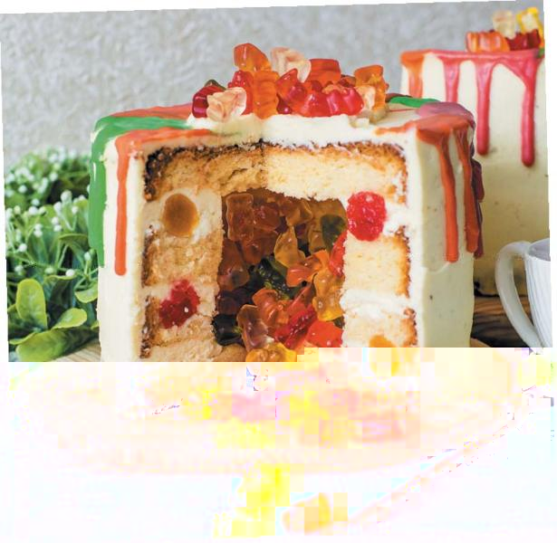
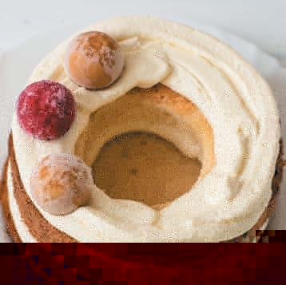

Для бисквита
сливочное масло – 350 г
сахар – 350 г
мука – 450 г
яйца – 6 шт.
разрыхлитель – 4 ч. л.
сок 1 лимона
лимонная цедра – 2 ст. л.
Для сиропа
вода – 100 мл
сахар – 100 г
Для персикового желе
персики – 300 г
сахар – 100 г
желатин – 12 г
цедра лимона – ч. л.
желтый пищевой краситель
Для клубничного желе
клубника – 250 г
сахар – 100 г
желатин – 12 г
Для крема и украшения
сливочный сыр – 300 г
сахарная пудра – 150 г
сливки – 250 мл
желатин – 15 г
лимонная цедра – 1 ч. л.
желейные конфеты – 200 г
1. Для бисквита мягкое сливочное масло растереть с сахаром. Постепенно ввести яйца, хорошо взбить. Добавить сок и цедру лимона, разрыхлитель, всыпать муку, замесить тесто.
2. Разделить тесто на две части и выложить в формы, выстеленные промасленным пергаментом. Выпекать в духовке при температуре 180 °C около 30 минут. Готовность проверить деревянной шпажкой. Остудить бисквиты на решетке. Каждый разрезать на 2 коржа. В центре двух коржей вырезать окружность диаметром 6 см.
3. Из воды и сахара приготовить сироп, пропитать им коржи.
4. Для персикового желе замочить желатин в 60 мл воды. Мякоть персиков измельчить блендером, смешать с сахаром, добавить цедру лимона, довести до кипения. Немного остудить, добавить растворившийся желатин, краситель, перемешать. Вылить в форму, поставить в холодильник на несколько часов.
5. Аналогично приготовить желе из клубники.
6. Для крема желатин замочить в 70 мл воды. Сливочный сыр взбить с сахарной пудрой, добавить лимонную цедру. Сливки взбить до мягких пиков, соединить с сырной смесью, добавить растворившийся желатин, хорошо перемешать.
7. На блюдо выложить целый корж, покрыть кремом, распределить кусочки желе, утапливая их в крем. Желе покрыть слоем крема. Сверху уложить два коржа с отверстиями в центре, промазывая их кремом и утапливая в креме желе (фото 1).

В образовавшуюся полость поместить желейные конфеты, накрыть торт целым коржом. Верх и бока смазать кремом. Поставить торт в холодильник на ночь.